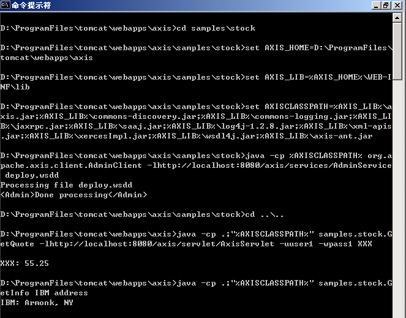
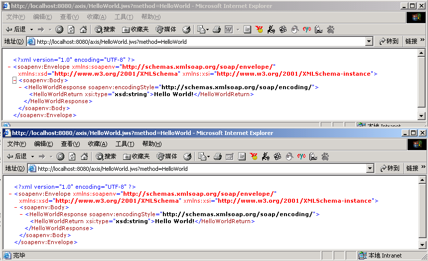

相关文章已经找到了，放在了WebService收夹了。
一篇word文档，名为16_33.doc
，不长，别忘了。
Apache Axis 是开源的SOAP服务器和客户端。
开始写一个Web服务之间需要知道的知识：
安装Apache Axis:
0、安装JRE或JDK，版本1.3或更新。
1、安装tomcat,版本要求4.1.x,不要安装针对Java1.4的LE版。
Servlet引擎要支持2.2版或更新。
2、解压下载Axis,将子目录webapps下的axis目录，复制到$TOMCAT_HOME/webapps目录下，将子目录lib下的所有jar文件，复制到$TOMCAT_HOME/common/lib/目录下。
3、启动tomcat,
访问http://localhost:8080/axis，会看到，
点击"Validate",应看到，
在浏览器地址栏输入http://localhost:8080/axis/services/Version?method=getVersion，应看到
。
安装新的WEB服务
1、把编译过的class文件放入$TOMCAT_HOME/webapps/axis/WEB-INFO/classes目录下（注好象应该是jwsclasses目录，但文档中说是classess），如果已经成jar文件则放入$TOMCAT_HOME/webapps/axis/WEB-INF/lib下。
2、告诉AxisEngine这个新的服务。可以通过Admin服务(AdminClient程序)或Ant编译时的<axis-admin>任务来完成。这两个过程，都是运行Axis SOAP客户端与Axis管理服务（本身也是一个WEB服务）对话完成。
布署例程中的stock应用：
进入axis\samples\stock
set AXIS_HOME=D:\ProgramFiles\tomcat\webapps\axis
set AXIS_LIB=%AXIS_HOME%\WEB-INF\lib
set AXISCLASSPATH=%AXIS_LIB%\axis.jar;%AXIS_LIB%\commons-discovery.jar;%AXIS_LIB%\commons-logging.jar;%AXIS_LIB%\jaxrpc.jar;%AXIS_LIB%\saaj.jar;%AXIS_LIB%\log4j-1.2.8.jar;%AXIS_LIB%\xml-apis.jar;%AXIS_LIB%\xercesImpl.jar;%AXIS_LIB%\wsdl4j.jar;%AXIS_LIB%\axis-ant.jar
java -cp %AXISCLASSPATH% org.apache.axis.client.AdminClient -lhttp://localhost:8080/axis/services/AdminService deploy.wsdd
测试
java -cp .;"%AXISCLASSPATH%" samples.stock.GetQuote -lhttp://localhost:8080/axis/servlet/AxisServlet -uuser1 -wpass1 XXX
java -cp .;"%AXISCLASSPATH%" samples.stock.GetInfo IBM address
布署和测试的结果如图：

从HelloWorld!开始。
编辑文件$TOMCAT_HOME\webapps\axis\HelloWorld.jws,内容如下：
public class HelloWorld {
public String Hi() {
return "Hi";
}
public String HelloWorld() {
return "Hello World!";
}
}
在浏览器地址栏输入http://localhost:8080/axis/HelloWorld.jws?method=HelloWorld,或http://localhost:8080/axis/HelloWorld.jws?method=Hi,结果如图所示：

说明：也可编辑一个HelloWorld.java，编译成HelloWorld.class并将其复制到$TOMCAT_HOME\axis\webapps\WEB-INF\jwsclasses目录下。
更复杂的应用开发，等以后学习时再帖吧。